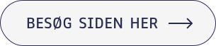

Grundlæggende indhold
Tema 5 - Passion site / Virksomhedssite
Dette tema var delt op i to opgaver, hvor jeg først lavede et passion site om Sara Kofoed Hansen, hvis passion er musik. Til denne opgave lavede jeg et video-interview af Sara som blev lagt op på websitet. I den anden opgave lavede jeg et nyt redesignet website, af keramiker Ane Schollerts eksisterende website. Dette var også den første gruppeopgave vi blev sat for på semesteret. .
Passionsite - Proces
I denne opgave skulle vi som gruppe filme og interviewe en person med en passion. Forud for optagelserne forberedte vi os grundigt ved at udarbejde et storyboard og formulere relevante spørgsmål til interviewet. Efter optagelserne redigerede vi hver især vores egen version af passionvideoen. I min video brugte jeg b-rolls med autentiske øjeblikke, der fremhævede personens passion og skabte en stærkere fortælling. Derefter kodede vi individuelle websites baseret på udleverede wireframes, som præsenterede personen og deres passion. Til mit website skabte jeg en Lottie-animation med Adobe After Effects og implementerede min video på to forskellige måder i HTML.
Virksomhedssite - Proces
Denne opgave var en gruppeaflevering, hvor vi redesignede keramikeren Ane Schollerts eksisterende
hjemmeside. I
gruppearbejdet benyttede vi Trello og SCRUM til projektstyring samt udarbejdede en fælles
teamkontrakt.
Vi begyndte processen med en analyse af det eksisterende website, hvor vi fokuserede på brand,
målgruppe, design og
brugerrejser. Som en del af analysen gennemførte vi blandt andet en 5-sekunders-test for at
undersøge brugernes første
indtryk.
På baggrund af vores research gik vi i gang med idéudviklingen, hvor vi udviklede moodboards,
styletiles og wireframes
for at danne grundlag for prototypen. Efter at have skabt prototypen udførte vi yderligere tests,
herunder endnu en
5-sekunders-test og tænke-højt-test, for at optimere løsningen.
I kodningsfasen arbejdede hvert gruppemedlem på en individuel HTML-side, og jeg var ansvarlig for at
kode "Om"-siden. Da
sitet var færdigkodet, afsluttede vi med en præsentation, hvor vi fremlagde vores proces og den
endelige løsning.
Læring
I dette tema har jeg fået erfaring med centrale aspekter af indholdsproduktion, fra planlægning til færdiggøreelse. Jeg har arbejdet med optagelse af video, og redigering af video i Adobe Premiere. Gennem disse processer har jeg lært at skabe mindre, men effektive medieproduktioner. Derudover har jeg fået erfaring med Adobe Aftereffects, ved at lave en lottiefile. Dette kan jeg fremover bruge til at gøre websites mere dynamiske og visuelt engagerende. Udover det har jeg fået erfaringer med hvordan man som multimediedesignere kan arbejde sammen om at skabe indhold og websites.